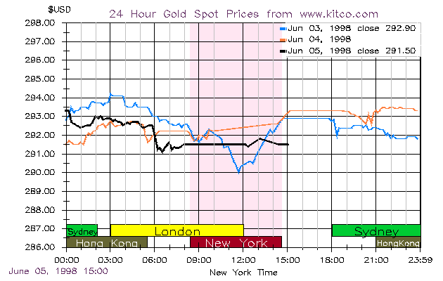

|
A few years ago I came across a copy of a speech by a well-known economist who was purporting to advise the government of Russia what they should to do stabilize the Russian money supply. The speech recommended they should "buy and sell gold on the London Metal Exchange." Which made about as much sense as recommending that Hillary Clinton enhance her income by buying and selling cattle futures at the NYMEX. Cattle futures aren't traded at the NYMEX, and gold isn't traded at the London Metal Exchange. The London Bullion Market AssociationThe center of world gold trading is London, and the center of London gold and silver trading is the London Bullion Market, operated by the London Bullion Market Association (LBMA). Members are classified into market making members, which include all of the participants in the twice-daily London gold fix described in Part 1, as well as other bullion houses (for a total of 14), and ordinary members, of which there are about 50. Most bullion houses act both as brokers for customers, and as primary dealers who hold positions of their own in order to profit from the bid/asked spread or from equilibrium price movements. Market makers are obligated to make two-way prices (that is, for both buying and selling) throughout the day. Ordinary dealers will usually quote prices to their own clients, but have no obligation to make two-way markets or to quote to other dealers.  The fixing of the gold price starts at 10:30 a.m. in the morning (and lasts until a single price representing temporary equilibrium between supply and demand is found, usually a few minutes later), and again at 3:00 p.m. in the afternoon. (A silver price fixing takes place beginning at 12 noon.) During these time periods the fix is the principal focus of trading, but trading by the same firms occurs before and after the fix, and indeed gold trades around the world for almost 24 hours a day. The time overlaps between various trading centers can be seen in the daily gold price chart above from Kitco. Most gold trading around the world takes place "loco London", meaning the gold is sold for delivery in London. The London Good Delivery BarThe LMBA sets down standards for gold bars that can be accepted for "good delivery." The London good delivery bar is a benchmark standard for spot (or physical) gold transactions. The requirements are:
Price quotations in the spot market are usually expressed in U.S. dollars, and are quoted as the price per fine troy ounce, such as: $292.50-$292.80/oz Here the bid or buying price is $292.50 per fine troy ounce, and the asked or selling price is $292.80 per fine troy ounce. Spot delivery will take place in terms of London good delivery bars on the spot date, which is the second working day after the trade date. Although the price is quoted in dollars per ounce, all trades must take place in terms of so many gold bars, because physical delivery must take place in whole multiples of gold bars. The standard amount for a dealer spot price quotation is ten 400 oz. bars, or 4000 ozs. of gold. Thus if one purchased the standard amount at the dealer's asked rate listed above, one would pay: 10 x 400 x $292.80 = $1,171,200 in two working days to the seller, and receive in return 4000 ozs. of gold at one of the bullion clearing houses. London Clearing HousesA buillion clearing house nets out gold transactions, much as banks do in trading foreign exchange. Only the net difference between total purchases and total sales vis-a-vis a counterparty is actually transferred. But a bullion clearing bank may take physical delivery of bullion, whereas a foreign exchange clearing bank only takes delivery of foreign exchange in the form of accounting entries (a checking balance at some foreign bank). LMBA clearing houses include the Bank of England, the five dealers at the gold fixing, and a few other houses whose identities have varied from time to time. The number of clearing members is smaller than the number of market making members (8 versus 14), because the financial and other requirements are much stricter for clearing members. The volume of precious metals cleared by the members of the LBMA has traditionally been kept confidential, but in January 1997 the LBMA released figures for the final (December) quarter of 1996. The average daily volume cleared between the (then) 14 market making members of the LBMA was approximately 933 tons (about $10 billion at prices then current), compared with annual global mine production of approximately 2,300 tons. That is, an amount equal to total annual gold production was cleared every 2.5 days. (The total amount of silver cleared daily was approximately 7,775 tons.) Of course, because most gold is traded loco London, these clearing figures represent the result of worldwide gold trading, not just trading in London. Of the 933 tons cleared daily, it was estimated that about 218 tons represented London trades, while of the 7,775 tons of silver cleared daily, about 3,732 tons represented London trades. Gold accounts at a bullion house may be allocated or unallocated. The unallocated account is most typical. One holds on deposit a specific number of ounces of gold, but these ounces of gold are not identified with any individual physical gold bars. These unallocated accounts may or may not bear interest, and may or may not have insurance and storage charges. All clearing accounts are unallocated accounts, and contain identical (hypothetical) 400 oz. bars. Most gold trading takes place by paper transfers between unallocated accounts. Bookkeeping entries avoid the transactions costs and security risks of moving the actual metal. Traders clear their trades with one another through book entry transfers in or out of accounts at one or more clearing members, while clearing members clear their net trades with one another through their gold accounts at the Bank of England, as well as by physical gold transfers. Allocated accounts, by contrast, contain individual gold bars with given serial numbers. In effect, allocated accounts are safe-keeping or custody accounts. Such accounts do not bear interest, are normally subject to charges, and may not be used as clearing accounts. Transactions at the FixThe London daily price fixings allow everyone to deal on equal terms, and large volumes to be transacted at a single price. In addition, the price is widely publicized, so it is undisputed. Once a price has been found such that net gold for sale (in 5 bar denominations--i.e., units of 2000 oz.) is equal to net gold for purchase, transactions then take place according to the following formula. A seller on the fix receives the fixing price plus $.05 per ounce of gold (fix+.05). A buyer on the fix pays the fixing price plus $.25 per ounce of gold (fix+.25). This is equivalent to a market bid price of fix+.05, and a market asked price of fix+.25, for a total spread of $.20. This spread is narrower than the normal dealing spread, which is typically $.30 or higher. Fixing orders may be placed in various ways. Example 1: A market order. A client leaves an order to sell 20,000 ozs. at the PM fix. Example 2: A price limit order. The client places an order to buy 25,000 ozs. at the AM fix, if the fixing price is at or lower than $290/oz. Example 3: An average rate order. A client places at order to buy 10,000 ozs. at the average of the AM fixing price for July 1998. (Simple question in risk management: How will the firm manage this order?) Example 4: Dynamic order. The client stays on the horn, listening to the fixing commentary, and changes his order according to the new fixing price being tried.
|